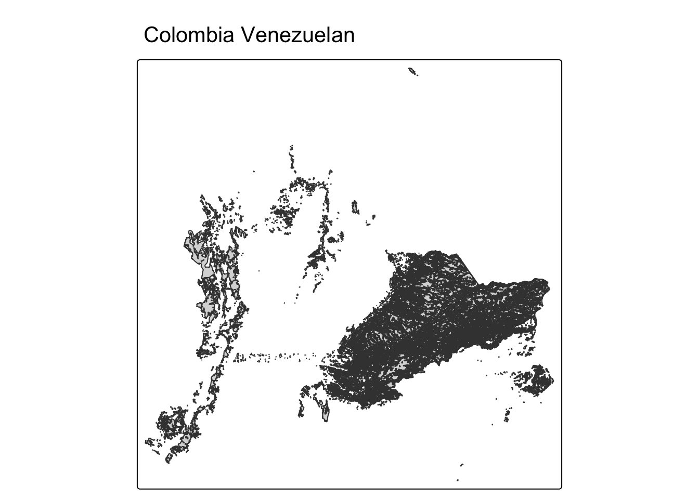

In this section, we’ll explore key functions inside the sf package using data from Colombia. Colombia is considered one of the world’s most “megadiverse” countries, hosting close to 10% of the planet’s biodiversity. Per square kilometer, there are more bird, amphibian, butterfly, and frog species in Colombia than anywhere else on Earth. Here, ill-planned road development poses a significant threat to habitat fragmentation, wildlife movement, and water flows. The Colombian government has developed a broad set of guidelines for sustainable road development, called the Lineamientos de Infraestructura Verde Vial (LIVV) or Green Road Infrastructure Guidelines (GRI). The GRI is mandatory for all national roads across Colombia.
Learning Objectives Use st_read() to read multiple vector data types Retrieve the CRS of a vector object with st_crs() Transform CRS and match across all vector data types with st_transform() Perform dplyr attribute manipulations on sf data
library(tidyverse)
── Attaching core tidyverse packages ──────────────────────── tidyverse 2.0.0 ──
✔ dplyr 1.1.4 ✔ readr 2.1.5
✔ forcats 1.0.0 ✔ stringr 1.5.1
✔ ggplot2 3.5.2 ✔ tibble 3.3.0
✔ lubridate 1.9.4 ✔ tidyr 1.3.1
✔ purrr 1.1.0
── Conflicts ────────────────────────────────────────── tidyverse_conflicts() ──
✖ dplyr::filter() masks stats::filter()
✖ dplyr::lag() masks stats::lag()
ℹ Use the conflicted package (<http://conflicted.r-lib.org/>) to force all conflicts to become errors
library(sf)
Linking to GEOS 3.13.0, GDAL 3.8.5, PROJ 9.5.1; sf_use_s2() is TRUE
library(tmap)
Next, let’s download our data. Unzip and move this to your version-controlled R Project’s data folder.
Read in the data for Colombia’s ecoregions, roads, and bird observations - Use rename() to rename the columns decimal_longitude and decimal_latitude to long and lat in the bird observation dataset - Use st_as_sf() to convert the bird observation dataset into an sf object
#aves <- read_csv(here::here("data","wk2","dataves.csv"))#Before renaming columns - lat and lon have their own column. With st_as_sf # it now creates a column called geometry that combines both columns into one
Reading layer `Colombia' from data source
`/Users/marietolteca/Documents/MEDS/EDS-223L/eds223-sections/data/wk2/Colombia/Colombia.shp'
using driver `ESRI Shapefile'
Simple feature collection with 136 features and 17 fields
Geometry type: MULTIPOLYGON
Dimension: XY
Bounding box: xmin: -8795287 ymin: -469977.2 xmax: -7443980 ymax: 1398445
Projected CRS: WGS 84 / Pseudo-Mercator
# Read in Shapefile Roads in Columbiaroads <-st_read(here::here("data","wk2","RDLINE_colombia", "RDLINE_colombia.shp"))
Reading layer `RDLINE_colombia' from data source
`/Users/marietolteca/Documents/MEDS/EDS-223L/eds223-sections/data/wk2/RDLINE_colombia/RDLINE_colombia.shp'
using driver `ESRI Shapefile'
Simple feature collection with 3088 features and 10 fields
Geometry type: LINESTRING
Dimension: XY
Bounding box: xmin: -8772144 ymin: -351396.2 xmax: -7512194 ymax: 1397046
Projected CRS: WGS 84 / Pseudo-Mercator
# Read in CSVaves <-read_csv(here::here("data","wk2","dataves.csv")) %>%# Easier to read in dataframeas_tibble() %>%# Rename Columnsrename(long = decimal_longitude,lat = decimal_latitude) %>%# Change Coordinates into spatial objectst_as_sf(coords =c("long", "lat"), crs =4326) # click on metadata which EPSG to use
Rows: 360977 Columns: 36
── Column specification ────────────────────────────────────────────────────────
Delimiter: ","
chr (23): dataset_key, occurrence_id, kingdom, phylum, class, order, family...
dbl (11): gbif_id, decimal_latitude, decimal_longitude, elevation, elevatio...
lgl (1): coordinate_uncertainty_in_meters
dttm (1): last_interpreted
ℹ Use `spec()` to retrieve the full column specification for this data.
ℹ Specify the column types or set `show_col_types = FALSE` to quiet this message.
2. View class and geometry type
Check the class() of all vector objects (including the spatially-enabled bird observation dataset) Use st_geometry_type() to peak at the geometry type
class(col)
[1] "sf" "data.frame"
class(roads)
[1] "sf" "data.frame"
class(aves)
[1] "sf" "tbl_df" "tbl" "data.frame"
# Checking information on each variableunique(st_geometry_type(col))
[1] POINT
18 Levels: GEOMETRY POINT LINESTRING POLYGON MULTIPOINT ... TRIANGLE
3. Select a macro ecoregion of interest
Use filter() to select a macro region of interest from N1_MacroBi in Colombia’s ecoregions dataset Plot the subset using tmap
col_ven <- col %>%filter(N1_MacroBi =="Colombia Venezuelan")tm_shape(col_ven) +tm_polygons() +tm_title("Colombia Venezuelan")

4. Play with coordinate reference system (CRS)
First, let’s use st_crs() to check the CRS and it’s units.
# View CRS of each objectst_crs(col)
Coordinate Reference System:
User input: WGS 84 / Pseudo-Mercator
wkt:
PROJCRS["WGS 84 / Pseudo-Mercator",
BASEGEOGCRS["WGS 84",
ENSEMBLE["World Geodetic System 1984 ensemble",
MEMBER["World Geodetic System 1984 (Transit)"],
MEMBER["World Geodetic System 1984 (G730)"],
MEMBER["World Geodetic System 1984 (G873)"],
MEMBER["World Geodetic System 1984 (G1150)"],
MEMBER["World Geodetic System 1984 (G1674)"],
MEMBER["World Geodetic System 1984 (G1762)"],
MEMBER["World Geodetic System 1984 (G2139)"],
MEMBER["World Geodetic System 1984 (G2296)"],
ELLIPSOID["WGS 84",6378137,298.257223563,
LENGTHUNIT["metre",1]],
ENSEMBLEACCURACY[2.0]],
PRIMEM["Greenwich",0,
ANGLEUNIT["degree",0.0174532925199433]],
ID["EPSG",4326]],
CONVERSION["Popular Visualisation Pseudo-Mercator",
METHOD["Popular Visualisation Pseudo Mercator",
ID["EPSG",1024]],
PARAMETER["Latitude of natural origin",0,
ANGLEUNIT["degree",0.0174532925199433],
ID["EPSG",8801]],
PARAMETER["Longitude of natural origin",0,
ANGLEUNIT["degree",0.0174532925199433],
ID["EPSG",8802]],
PARAMETER["False easting",0,
LENGTHUNIT["metre",1],
ID["EPSG",8806]],
PARAMETER["False northing",0,
LENGTHUNIT["metre",1],
ID["EPSG",8807]]],
CS[Cartesian,2],
AXIS["easting (X)",east,
ORDER[1],
LENGTHUNIT["metre",1]],
AXIS["northing (Y)",north,
ORDER[2],
LENGTHUNIT["metre",1]],
USAGE[
SCOPE["Web mapping and visualisation."],
AREA["World between 85.06°S and 85.06°N."],
BBOX[-85.06,-180,85.06,180]],
ID["EPSG",3857]]
st_crs(roads)
Coordinate Reference System:
User input: WGS 84 / Pseudo-Mercator
wkt:
PROJCRS["WGS 84 / Pseudo-Mercator",
BASEGEOGCRS["WGS 84",
ENSEMBLE["World Geodetic System 1984 ensemble",
MEMBER["World Geodetic System 1984 (Transit)"],
MEMBER["World Geodetic System 1984 (G730)"],
MEMBER["World Geodetic System 1984 (G873)"],
MEMBER["World Geodetic System 1984 (G1150)"],
MEMBER["World Geodetic System 1984 (G1674)"],
MEMBER["World Geodetic System 1984 (G1762)"],
MEMBER["World Geodetic System 1984 (G2139)"],
MEMBER["World Geodetic System 1984 (G2296)"],
ELLIPSOID["WGS 84",6378137,298.257223563,
LENGTHUNIT["metre",1]],
ENSEMBLEACCURACY[2.0]],
PRIMEM["Greenwich",0,
ANGLEUNIT["degree",0.0174532925199433]],
ID["EPSG",4326]],
CONVERSION["Popular Visualisation Pseudo-Mercator",
METHOD["Popular Visualisation Pseudo Mercator",
ID["EPSG",1024]],
PARAMETER["Latitude of natural origin",0,
ANGLEUNIT["degree",0.0174532925199433],
ID["EPSG",8801]],
PARAMETER["Longitude of natural origin",0,
ANGLEUNIT["degree",0.0174532925199433],
ID["EPSG",8802]],
PARAMETER["False easting",0,
LENGTHUNIT["metre",1],
ID["EPSG",8806]],
PARAMETER["False northing",0,
LENGTHUNIT["metre",1],
ID["EPSG",8807]]],
CS[Cartesian,2],
AXIS["easting (X)",east,
ORDER[1],
LENGTHUNIT["metre",1]],
AXIS["northing (Y)",north,
ORDER[2],
LENGTHUNIT["metre",1]],
USAGE[
SCOPE["Web mapping and visualisation."],
AREA["World between 85.06°S and 85.06°N."],
BBOX[-85.06,-180,85.06,180]],
ID["EPSG",3857]]
st_crs(aves)
Coordinate Reference System:
User input: EPSG:4326
wkt:
GEOGCRS["WGS 84",
ENSEMBLE["World Geodetic System 1984 ensemble",
MEMBER["World Geodetic System 1984 (Transit)"],
MEMBER["World Geodetic System 1984 (G730)"],
MEMBER["World Geodetic System 1984 (G873)"],
MEMBER["World Geodetic System 1984 (G1150)"],
MEMBER["World Geodetic System 1984 (G1674)"],
MEMBER["World Geodetic System 1984 (G1762)"],
MEMBER["World Geodetic System 1984 (G2139)"],
MEMBER["World Geodetic System 1984 (G2296)"],
ELLIPSOID["WGS 84",6378137,298.257223563,
LENGTHUNIT["metre",1]],
ENSEMBLEACCURACY[2.0]],
PRIMEM["Greenwich",0,
ANGLEUNIT["degree",0.0174532925199433]],
CS[ellipsoidal,2],
AXIS["geodetic latitude (Lat)",north,
ORDER[1],
ANGLEUNIT["degree",0.0174532925199433]],
AXIS["geodetic longitude (Lon)",east,
ORDER[2],
ANGLEUNIT["degree",0.0174532925199433]],
USAGE[
SCOPE["Horizontal component of 3D system."],
AREA["World."],
BBOX[-90,-180,90,180]],
ID["EPSG",4326]]
# View units of each object CRS st_crs(col)$units
[1] "m"
st_crs(roads)$units
[1] "m"
st_crs(aves)$units
NULL
Say, you want to remove the CRS of an object, in order to “disable” its spatial features. Setting the CRS to NA with st_crs() <- NA is a brute force way to remove a CRS and “corrupt” a spatial object. Let’s do it the right way!
Extract the longitude and latitude from the geometry column and use st_drop_geometry() moving data from shp into a csv | This will only work with this pipe operator ( %>% )
aves_df_st_coords <- aves %>% dplyr::mutate(lon =st_coordinates(.)[,1], # Assign first matrix item to "lon" : First Entrylat =st_coordinates(.)[,2]) %>%# Assign second matrix item to "lat" : Second Entryst_drop_geometry() # Remove geometry column now that it's redundant
Convert long and lat into a geometry again with st_as_sf() to obtain a proper sf data frame